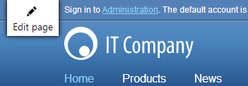
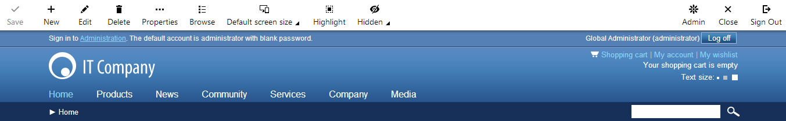

Enabling on-site editing
Kentico provides a way to work with the content of websites through a convenient on-site editing interface. This allows editors to make changes to page content and manage pages directly while viewing the website from the live site perspective.
All actions that can be done via on-site editing are also available in the Pages application. It simply offers a different way to edit the website that may be quicker and easier in many cases (particularly for users who prefer a minimal interface). It is recommended to use the Pages application for creating the core structure of new sites or when performing complex changes. On‑site editing is most suitable for adding or adjusting the content of an existing website that is already running.
To allow on-site editing for your website:
Open the Settings application.
Go to Content -> Content management.
Select Enable On-site editing.
(Optional) Check Enable On-site editing button.
Determines whether the system displays the Edit page button in the corner of pages on the live site for users who are authorized as editors.
If disabled, users can access on-site editing mode through the ~/cmsedit URL, or by following links provided by the Edit page link or Admin actions web parts.
Click Save.
Authorized editors can now open the website in on-site editing mode through the following URL:
http://<domain>/<virtual directory>/cmsedit
Just like the standard Kentico interface, on-site editing mode requires authentication and a logon screen opens if you are not signed in yet. Editors who are already logged in on the live site may switch to on-site editing mode by clicking the Edit page button displayed in the corner of the page. This opens the on-site editing interface for the page that is currently being viewed.

Opening on-site editing mode through the Edit page button
On-site editing mode works just like the standard live site, with the addition of a toolbar above the page. The content and configuration of pages can be modified through the buttons on this toolbar, along with a special interface displayed when hovering over specific editable sections of the currently viewed page.

Viewing a page in on-site editing mode
To move between pages, use the site's standard navigation. All other functionality of the website is also available in on-site editing mode. However, there are several important differences from the regular live site that should be considered:
On-side editing mode always displays pages in their current editing state, even if they are not published on the actual live site yet (like in the Preview and Edit view modes of the Pages application). This makes it possible to view and modify pages before they are presented to the website's regular visitors.
All forms of page redirection are disabled. This allows editing of pages that would normally be forwarded to a different address on the live site. You can identify pages that are configured for redirection by the presence of a message box, which also provides a link to the target page.
If a Page not found error occurs while browsing in on-site editing mode, it is handled by a special system page that contains a link to the root of the website.
Setting up user accounts for on-site editing
Editor prerequisite
Like with the main administration interface, users need to be designated as editors to access on-site editing mode.
Open the Users application.
Edit (
 ) the user.
) the user.On the General tab, set the Privilege level to Editor (or higher).
Click Save.
The system now recognizes the given user as an editor.
Permissions
There are several permissions that affect on-site editing. You can configure these permissions for specific roles in the Permissions application.
|
Module |
Permission |
Description |
|
Content |
Read |
Only users who belong to roles that have this permission are able to enter on-site editing mode. |
|
Modify |
Allows users to edit page fields and the content of editable regions. |
|
|
Create |
Allows users to create new pages. |
|
|
Delete |
Allows users to delete existing pages from the website. |
|
|
Browse tree |
Users need this permission to perform page management actions, such as creating and deleting pages or viewing the page list. It is not required for basic work with editable region content. |
|
|
Design |
Design website |
Users need this permission to configure the properties of web parts through the on-site editing interface. For users without this permission, the system only highlights editable regions and images. |
Additionally, all permissions configured for page types or individual pages also apply in on-site editing mode.
UI personalization
You can also customize the visibility of individual elements on the on-site editing toolbar and in the related dialogs for particular roles via UI personalization.
Open the UI personalization application.
Select the appropriate Site and Role.
Choose the CMS On-site editing Module.
Configure the checkboxes as required. The available options match individual buttons on the main on-site editing toolbar.
Members of the selected role can now see only the specified UI elements.
Note: All of the UI personalization options set for the Content module also apply (for example various page property tabs or the web part properties dialog).